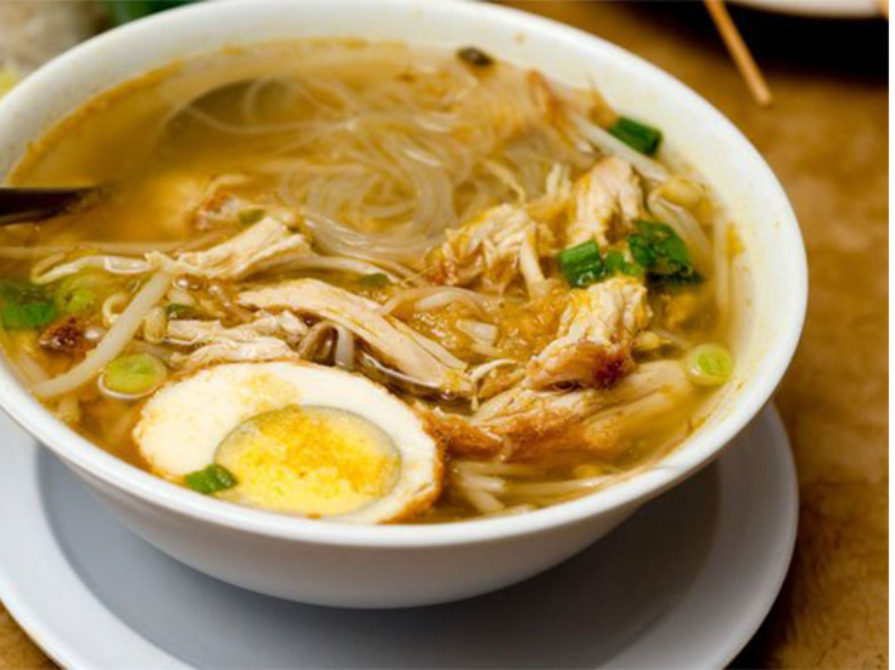

Soto
Soto (also known as sroto, tauto, or coto) is a traditional Indonesian soup mainly composed of broth, meat, and vegetables. Many traditional soups are called soto, whereas foreign and Western influenced soups are called sop. Soto is sometimes considered Indonesia's national dish, as it is served from Sumatra to Papua, in a wide range of variations. Soto is omnipresent in Indonesia, available in many warungs and open-air eateries on many street corners, to fine dining restaurants and luxurious hotels. Soto, especially soto ayam (chicken soto), is an Indonesian equivalent of chicken soup. Because it is always served warm with a tender texture, it is considered an Indonesian comfort food.
Source: https://en.wikipedia.org/wiki/Soto_(food)